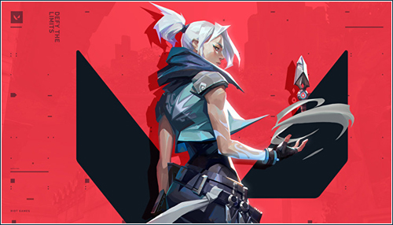

Big update for GTA:V Online!
Posted by:
Karo Massudi - Date: 15/02/2020
One of the pillars of GTA Online journalism is speculation about upcoming DLCs. Whenever Rockstar drops an update,
it causes some serious waves in both the GTA V community and in the gaming press.
Rockstar has been releasing free DLC packs ever since GTA 5 first launched way back in 2013 and sorting through it all for
someone who jumped on the bandwagon at a later date (or on a newer platform) might be something of a daunting task.
Well, let us help you! Below, you will find a full and complete list of all GTA Online DLCs & Updates in chronological order
from newest to oldest, each of them linking to their respective article providing detailed information. The only place you'll
find a more extensive listing of the latest updates is from Rockstar Support.
“Cherry-picked by Danny Brown and special guests including UK rapper Skepta, iFruit Radio features 27 tracks from artists
including DaBaby, Megan Thee Stallion, Denzel Curry & YBN Cordae, City Girls, Skepta & AJ Tracy, Freddie Gibbs & Madlib and
many more including exclusive tracks and debuts from Baauer x Channel Tres ft Danny Brown and slowthai.”
The good news is that iFruit Radio will be available on the radio dial in both GTA Online and Grand Theft Auto V Story Mode this week.
As mentioned above, iFruit Radio will be going live on December 12, as part of The Diamond Casino Heist update.
The new update is expected to be launched in the morning, GMT, and will include a number of new vehicles and missions.
Rockstar Games has also confirmed that the new Casino missions will be different from other heists featured in-game.
Based on the location, the new Diamond Casino Heist is set to become the most cash-rich mission available.

What's really new in Overwatch 2?
Posted by:
Karo Massudi - Date: 11/02/2020
Blizzard officially unveiled Overwatch 2 at BlizzCon 2019.
Apparently the sequel is still in early development and Blizzard doesn't know when it will release.
"I don't know. I have no idea," creative director Jeff Kaplan said during the Overwatch 2 reveal panel.
"Like, just let us make it great, that's what we care about more than anything.
We don't have a date in mind."
Not long after the official Twitter account for PlayStation Brazil tweeted about a 2020 release date for Overwatch 2,
the official Twitter of the Overwatch League team, the Vancouver Titans, has done the same thing.
Like the tweet made by PlayStation, this latest tweet has
since been deleted but it's been captured by Dexerto.
The tweet says "Overwatch 2 is coming out this year" before going on to express excitement about "all the new game modes".
The official Twitter account for PlayStation Brazil has caused some excitement amongst Overwatch fans after tweeting out
that "2020 will be the year Overwatch 2 comes to PS4".
The tweet has since been deleted but a screenshot has been captured by Voxel.
There's been no official comment from Blizzard on the matter but it's quite possible this was a
simple mistake on the part of the
PlayStation Brazil Twitter team. We won't know for sure until we get an official comment; previously Jeff Kaplan has
flat out said he doesn't know when the game will launch as it's still in its early stages.
Blizzard has been fairly tight-lipped when it comes to the hero roster for Overwatch 2 but
fans who tuned into Jeff
Kaplan's Yule Log livestream have been left wondering if the director was teasing a new hero for the next release
(via ComicBook).
During the course of Kaplan's livestream, while
building an Overwatch Lego set at around the
6 hour and 11 minute mark, he mentions established Overwatch character Junker Queen and threw out some questions

Riot Games get promising reviews on their new FPS.
Posted by:
Karo Massudi - Date: 29/01/2020
Riot Games develops its CS: GO with Heroes Project A primarily in silence. Only recently have gamers learned more
details about the project, moreover, the source was an e-sports commentator. Now, the network has new screenshots
and the likely name of the game.
On February 20, Riot Games registered trademark Valiant. Later, the company created Twitter and Twitch accounts,
and now the old women have received official “ticks”. The change was noticed by the esports insider Slasher,
after which the Valorant accounts lost verification.
According to insider sources, March 2 RiotGames plans to publish more information about Valiant. In addition,
the company is already connecting pro-players and streamers for League of Legends, CS: GO and even Overwatch,
which will cover the project. Later, IGN magazine accidentally published Valorant screenshots where you can see the
characters, as well as the design of maps with weapons.
Riot Games while hiding details about the gameValorant process, but commentator on CS: GO Henry Greer played a
new project and shared his impressions. According to the “tester”, Project A is a tactical shooter with 5 by 5
fights, which is more reminiscent of CS: GO, but with classes and abilities in Overwatch and Apex Legends.
Nevertheless, the player noted that the abilities of the characters play a lesser role than in the mentioned games,
so gamers will have to rely more on weapons.
The company also showcased three games that do not have final titles or formal release plans just yet.
“Project F” is a role-playing game and “Project L” is a fighting game, both set within the League of Legends universe,
while tactical first-person shooter “Project A” will be a new property set “in a near-future Earth,” according to a Riot Games tweet.
Meanwhile, League of Legends: Wild Rift will bring a streamlined version of the original PC MOBA game to mobile
and console, plus Riot Games will release a standalone version of Teamfight Tactics—the auto-battler mode added
to League of Legends this past summer—for mobile. Riot Games also announced a League of Legends animated series called Arcane.
Rainbow Six: Siege - FaZe clan vs Black Dragons
Posted by:
Karo Massudi - Date: 24/01/2020
The world of Rainbow Six Siege has been rocked by allegations of match fixing against LATAM teams FaZe Clan and Black Dragons.
Former Black Dragons analyst Thiago “Thyy” Nicézio fired off a series of tweets in which it was claimed that current Black Dragons player
Juninho “GdNN1” Nunes and FaZe Clan player Ronaldo “ion” Oshawa conspired to throw a pair of matches.
ion was once a member of Black Dragons, and is GdNN1’s former teammate.
During an April 4 Pro League match, FaZe Clan defeated Black Dragons 7-0 on a forfeit victory thanks to multiple disconnections from four
Black Dragons players. The match ended up helping to send FaZe to the Pro League Finals in Milan, where they made the semifinals before
eventually falling to Evil Geniuses in a 0-2 loss. FaZe won $15,000 for its efforts in Milan.
According to Thyy, Faze’s throw for Black Dragons hasn’t happened yet. He alleged that the June 30 Brasileirão match would be suspect.
FaZe has safely secured its Brasileirão qualifying spot, while Black Dragons are on the precipice of not qualifying for the event.
Thyy has posted several seemingly damning voice recordings on Twitter, and said he has forwarded all relevant information to
Rainbow Six: Siege publisher Ubisoft.
Black Dragons has removed GdNN1 from its roster until a verdict has been delivered.
Ubisoft Brazil has yet to release a statement on the investigation.
If the results of match fixing scandals in other esports are a barometer, the players involved are in serious trouble.
Starcraft 2 legend Lee “Life” Seung-Hyundai got jail time for his match fixing scandal, and Braxton “swag” Pierce is still
indefinitely banned from Valve-sponsored Counter-Strike: Global Offensive events for his role in the iBUYPOWER match fixing scandal.
In the case of FaZe and Black Dragons, there could be serious legal repercussions, as the game Black Dragons
threw led to direct financial gain for FaZe Clan.
Halo: Combat Evolved Remastered is available on Steam.
Posted by:
Karo Massudi - Date: 21/01/2020
It took a while, but the remastered version of the original Halo has finally reached PCs. Halo: Combat Evolved Anniversary
is now available as part of the Master Chief Collection through Steam, the Microsoft Store and the Xbox Game Pass PC beta.
It boasts the requisite visual tune-ups, including support for 4K and ultra-wide displays, but also throws in modern creature
comforts like text chat, customizable key layouts and a 3D model view for customizing your Spartan. You can even flip between
classic and Anniversary audio in multiplayer matches, depending on how nostalgic you're feeling.
The launch of Halo: CE also brings tweaks across MCC, such as push-to-talk voice chat, per-game key bindings and an improved crouch mechanic.
The whole collection sells for $40 if you aren't using Xbox Game Pass, although you can buy most individual games for $10.
There's little doubt that Halo: CE is the star of the show for many people. It's not just the game that launched the series
-- for many, it was their first experience with pioneering gameplay elements that, in some cases, define first-person shooters to this day.
Halo: Combat Evolved Anniversary was developed as a partnership between development studios 343 Industries, Saber Interactive,
and Certain Affinity. 343 Industries, the Halo series' franchise overseers, approached Saber Interactive to develop a
remake of the original Halo in time for its tenth anniversary. After considering whether to remake the game entirely or to
adapt and add features to the existing PC version, Saber decided to use its game engine for reproducing the original's
appearance.
Halo: Combat Evolved is available to buy as part of the Master Chief Collection which also includes Halo: Reach and,
at a later date, Halo 2: Anniversary, Halo 3, Halo 3: ODST and Halo 4. You can also get it via the Microsoft Store or via
the Xbox Games Pass for PC.
How Counter-Strike revolutionised the game industry.
Posted by:
Karo Massudi - Date: 19/01/2020
Examine each version of Counter-Strike and you'll find that not a whole lot has changed since the game's inception as
a mod for Half-Life back in 2000. Sure, things like hit boxes, recoil, and aesthetics vary between 1.6, Source, and
Global Offensive--but the core, minimalistic gunplay remains intact. And that's one of the beautiful things about this
hardcore, competitive shooter: It hasn't changed much in over a decade because it doesn't need to, making it one of our top 100 games of all time.
Counter-Strike is brilliant in its Terrorist vs. Counter-Terrorist execution, as each objective-based match comes down
to teamwork, strategy, and pure skill. There is no regenerating health. There are no persistent equipment unlocks.
If you die during a round, you stay dead until the next begins. Hell, even being dead in Counter-Strike can be intense
when you watch the surviving members of your team rush to plant a bomb or rescue a hostage, knowing they're about to
walk into an ambush. More importantly, it's usually during death's spectator phase where your teammates will rally
and come up with a new strategy for the next round.
The pacing of its matches not only makes for quick games (unless players whip out a tent and camp their own spawn to
ambush enemy search parties), but also promotes teamwork in ways few other shooters do. Take Call of Duty: Modern Warfare 3,
for example. There, as long as you score high, you unlock Perks, Killstreaks, weapons, and equipment, becoming a more
efficient killing machine. As a result, players get obsessed with accruing points, even if that means taking an
"every man for himself" approach to team-centric games.
But Counter-Strike is chess with guns, a level playing field where every player is an integral piece on the perfectly balanced board.
Though there are some team-specific weapons (such as the Terrorists' powerful AK-47 or the Counter-Terrorists' M4A1),
every firearm is so finely tuned that each side has an equally powerful arsenal. Using an assault rifle?
You'll need to learn its firing pattern and burst capabilities. If you pick up an AWP--Counter-Strike's infamous
one-hit-killing sniper rifle--you better make that shot count, because an enemy could knife you to death by the
time your next bullet enters the chamber.